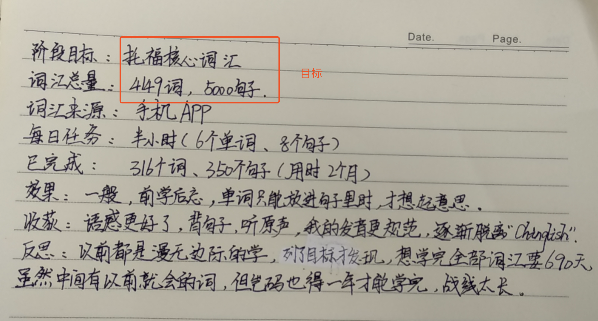
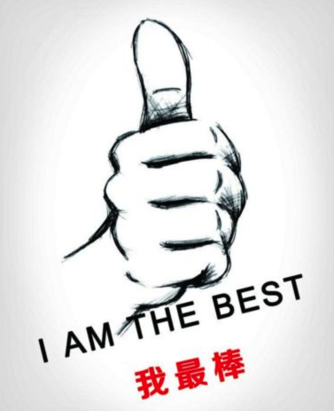

我有位社群会员简称尹老师，她是个英语爱好者，另外对儿童心理学也有过相关的研究，还开过铺导班。不过由于后来有了孩子就没有参加工作了，但是每天还是会坚持阅读英语，用她的话来说英语是她的爱好，从初中到大学，见到英语就起劲那种，就像有人爱跳舞有人爱美食，但是自己只是学着玩，也没人要求自己。
刚认识尹老师的时候，她这么和我说，我的脑海中就会不自主的想到，这是一位原本很有潜力的朋友，但由于她只是把这些当做爱好，因此很难将自己的价值发挥到最大化，也很难长久的坚持下去。
就像很多早期我认识的博客主，他们总跟我说自己是因为喜欢写博客而搭建的博客，可是为什么现在一个一个的关闭了？有人说是因为个人博客的流量越来越少，当然这点无法否认，但是为什么还有些个人博客存活至今，比如国内比较有名的卢松松，他的博客从2009年一直存活到至今，为什么？很大原因是因为他的博客有一套盈利模式，因为有盈利模式因此不用考虑服务器的成本问题，另外也能多一份收入来源，所以这种情况下根本没有必要关站。而那些关站的博客主，很大原因就是需要自己承担服务器费用，另外也没有多少人气，那自然就觉得没意思，也没有必要搭建博客，所以就自然的关闭了。
一个人有兴趣是好的，但是如果能把兴趣结合实际，那效果就不一样了。反而如果你只是把这件事情当做一个兴趣，那么很容易因为某些原因而懈怠，因为它不是你必须要做的事情。
拿英语来说，有些人学习英语只是为了出国旅游，还有些人不仅学习英语，还会将自己学习英语的过程分享给其他人，或者写成课程。他们不仅能够利用这些课程获取生活收入来源，还能不断的在这个领域深耕发芽，这才是真正把自己的兴趣融合到生活当中的人。
现实生活中有很多人是为了学习而学习，而不懂得怎么将自己学到的知识结合实际生活产生价值，因此最终都难以成功。
另外有些人虽然每天都在学习，但是学习并没有什么目标，属于盲目的学习。拿尹老师学习托福英语词汇来说，尹老师的目标是看完这本书，但是对于为什么要学习这些词汇以及学完之后要怎么样，并没有一个目标，所以往往是学完了这些单词就没有了然后。因此这种学习方法就不对了，有点像纯粹是背单词的，没有把学习到的知识应用到现实生活中去。

按照尹老师的这个英语词汇学习计划，大概需要一年以后才能学完。假设我们把时间调到一年后，尹老师把这本书顺利的阅读完了，她会是什么样的情况？会因此而觉得特别兴奋吗？我想很难，甚至可能陷入到另一场重复的学习中。所以问题不在于是否有把这本书阅读完，而在于你为什么要阅读这本书，你想阅读这本书达到什么样的目的。
这里尹老师把阅读词汇量作为目标是不对的，因为它本身不能产生效益，你会100个词汇量，还是会1000个词汇量，不是最关键的。如果你不能将这些词汇运用出来，那么甚至你自己都不知道自己到底会多少个词汇，因此你就会处在一种盲目的学习状态。
另外由于尹老师学习英语的目的太过于简单，只是不想因为自己现在在家带孩子而与社会脱轨，导致以后想上班的时候拉开太大的差距。而不和社会脱轨这个目标太小了，所以尹老师学习英语就不能发挥更大的作用，因为只要能够达到不和社会脱轨自己就已经满足了。
还有很多将学习作为爱好的人，其实内心是茫然的。另外他们总以为只要自己把一件事当做爱好就能长久的坚持下去，其实大错特错。在现实生活中对于大部分人来说，兴趣真的不值几个钱，反倒是自己以为不会喜欢的工作，一次又一次的激励着自己向前走，而这些不仅仅只是为了应付生存，更是因为它在你每达成一个阶段的时候，给予你莫大的鼓励。

所以如果尹老师能够将自己学习英语的目标设定大一些，效果就会截然不一样。比如将学习英语的目标设定成我要培训300个学员，那显然学习效果是不一样的，一方面这个目标有激励作用而不是满足即可，因此自己会更想去做这件事情。另外由于这个目标是培训300个学员，因此在学英语的过程中会更有目地的制定学习计划。
那后来尹老师是怎么做的？尹老师虽然现在没办法去参加工作，但是她有空就会去一些培训机构面试英语老师，而这么做的目的就是看看最近市场形势，市场需求，然后根据面试的内容，有针对性的制定学习计划。
对尹老师是如何转变思维以及具体怎么做的，可以关注一下，后面会分享噢，另外如果你有什么想问尹老师的，我也可以帮忙传达。
另外大家身边有没有这样的人？他们热爱学习，但是最终却没有成功。